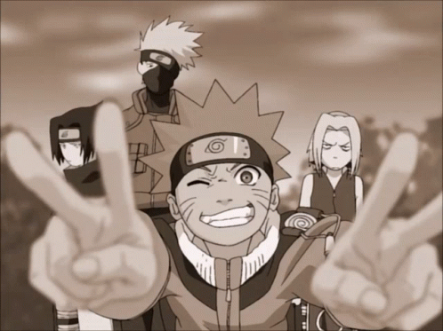
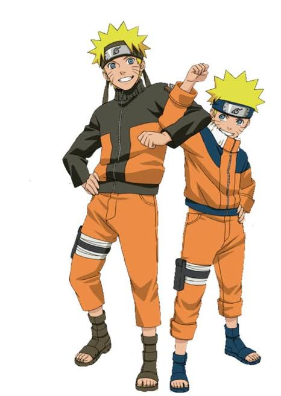
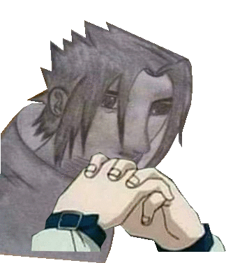

Criada por Masashi Kishimoto, a franquia acompanha Naruto Uzumaki, um jovem ninja órfão da Vila da Folha que carrega selado dentro de si a Raposa de Nove Caudas (Kurama). Rejeitado pelos moradores na infância, ele decide superar a solidão e conquistar o respeito de todos buscando o título de Hokage, o líder supremo da vila.
Naruto Clássico:
Formação do Time 7: Naruto integra a equipe liderada por Kakashi Hatake, ao lado de Sakura Haruno e Sasuke Uchiha.
Rivalidade e Trauma: Naruto desenvolve um laço profundo com Sasuke, que é consumido pelo desejo de vingança contra o irmão, Itachi Uchiha, responsável por exterminar seu clã.
A Ruptura: Buscando poder para concretizar sua vingança, Sasuke abandona a vila para se juntar ao vilão Orochimaru, fazendo Naruto prometer que o trará de volta.
Naruto Shippuden
A Organização Akatsuki: Anos mais tarde, Naruto retorna mais forte e precisa proteger o mundo da Akatsuki, um grupo criminoso que busca capturar todas as nove Bestas com Cauda para desencadear um plano de dominação global.
Quarta Grande Guerra Ninja: As grandes nações ninjas se unem em uma guerra mundial para deter a ameaça dos vilões lendários Madara Uchiha e Kaguya Otsutsuki.
Redenção: Após salvarem o mundo, Naruto e Sasuke travam o duelo final que culmina no resgate da amizade entre os dois e na realização do sonho de Naruto em virar Hokage.
Temas Centrais
A obra foca na superação da rejeição, na quebra do ciclo do ódio através do perdão, na importância da persistência diante das adversidades e no valor do trabalho duro acima do talento nato.


